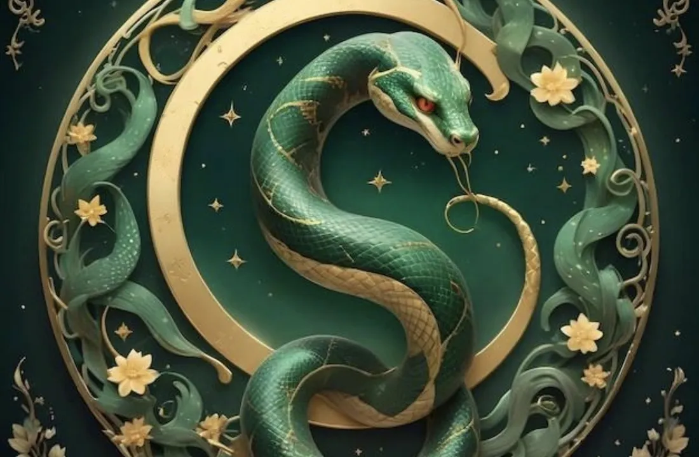

Zodiac Stories & Legends
The Snake's Place in the Great Zodiac Race
The Snake had no legs, could not fly and was not a fast swimmer. It still beat the Horse. The trick was patience.

Patience instead of speed
In the folk tale of the Great Race, every animal needed a plan to cross the river to the Jade Emperor. The Snake's plan was simple and quiet. It wrapped itself around one of the Horse's hooves and let the strong Horse carry it through the water. The Horse never noticed.
The perfect moment
As the Horse galloped toward the finish, the Snake waited. Right at the end, it uncoiled and darted out in front. The startled Horse jumped back, and the Snake slipped into sixth place, one step ahead of its surprised carrier. The Horse's side of the story is in The Horse in the Zodiac.
Was it fair?
Storytellers like to leave this question with the listener. The Snake did not push anyone into the river, as the Rat did to the Cat, but it did use the Horse without asking. Some see clever strategy; others see a lesson about watching who travels with you. Either way, the tale fits the Snake's traditional image: calm, observant and very good at timing.
The little dragon
The Snake sits right after the Dragon in the zodiac, and the two are closely linked. Professor Xiaohuan Zhao of the University of Sydney notes that snakes are regarded as "little dragons", and that a snake's shed skin is sometimes called the dragon's coat, linked to good luck, rebirth and regality. Professor Cai Zongqi of Lingnan University describes the snake as an early part of the dragon totem itself.
The snake also stands for wealth and wisdom, and together with the turtle and the crane it is a traditional symbol of long life. In ancient mythology the ancestral figures Fuxi and Nuwa are often shown with human heads and snake bodies, their tails intertwined as a sign of unity and harmony. The famous folk tale The Legend of the White Snake adds love and courage to the snake's story.
What this means for the Snake sign
Our Year of the Snake guide describes the sign as wise, intuitive and elegant: deep thinkers who plan carefully before acting. The race is that description in action. Traditional readings also mention the Snake's weak side, being secretive or overthinking, which is exactly what the Horse experienced on its hoof.
The Snake in Cambodia
In the Khmer zodiac, the Snake year is called Msanh. It follows the same order and begins at Khmer New Year in April; see Khmer animal years.
Born in the Year of the Snake? Find your zodiac animal and element and read the full Snake guide.
Frequently asked questions
How did the Snake get sixth place?
In the folk tale, it rode across the river wrapped around the Horse's hoof and darted ahead at the finish.
Why is the snake called the little dragon?
Snakes are traditionally seen as smaller relatives of the dragon, and their shed skin is sometimes called the dragon's coat.
What does the snake symbolise in Chinese culture?
Wisdom, renewal, wealth and long life, as well as love in The Legend of the White Snake.
Sources and further reading
- Wikipedia: Chinese zodiac — the Great Race folk tale and its variants, and the link between the animals and the Earthly Branches.
- University of Sydney: Lunar New Year 2025: what does Year of the Snake mean? — Professor Xiaohuan Zhao on the snake as a 'little dragon' and a symbol of wisdom and longevity.
- Asia Research News: Lingnan University scholar on the symbolism of the snake — Professor Cai Zongqi on the snake, the dragon totem, and Fuxi and Nuwa.
The Great Race and the other tales here are folk tales, told in many versions; they are not historical events. Personality traits are traditional zodiac beliefs, shared for culture and entertainment.
Explore more: The Horse in the Zodiac · The Dragon's Legend · Year of the Snake guide · The Great Zodiac Race · All Zodiac Stories & Legends
← Back to Zodiac Stories & Legendsរឿងនិទាន និងរឿងព្រេងរាសីចិន
លំដាប់របស់ពស់ (ម្សាញ់) ក្នុងការប្រណាំងដ៏ធំនៃរាសីចិន
ពស់គ្មានជើង ហោះក៏មិនរួច ហើយហែលទឹកក៏មិនលឿនដែរ។ ប៉ុន្តែ វានៅតែឈ្នះសេះ (មមី)។ ល្បិចរបស់វា គឺការអត់ធ្មត់។
ការអត់ធ្មត់ ជំនួសឲ្យល្បឿន
ក្នុងរឿងនិទានប្រជាប្រិយអំពីការប្រណាំងដ៏ធំ សត្វនីមួយៗត្រូវការផែនការមួយ ដើម្បីឆ្លងទន្លេទៅគាល់ស្ដេចស្ថានសួគ៌ (Jade Emperor)។ ផែនការរបស់ពស់ សាមញ្ញ និងស្ងៀមស្ងាត់។ វារុំខ្លួនជាប់នឹងក្រចកជើងមួយរបស់សេះ ហើយទុកឲ្យសេះដែលមានកម្លាំងខ្លាំង នាំវាឆ្លងកាត់ទឹក។ សេះមិនបានដឹងខ្លួនសោះឡើយ។
ពេលវេលាដ៏ល្អបំផុត
ខណៈដែលសេះកំពុងបោលសំដៅទៅទីបញ្ចប់ ពស់នៅតែរង់ចាំ។ លុះដល់ចុងបញ្ចប់បង្អស់ វាក៏លាតខ្លួនចេញ ហើយស្ទុះទៅខាងមុខយ៉ាងលឿន។ សេះភ្ញាក់ផ្អើល ក៏លោតថយក្រោយ ហើយពស់ក៏រអិលចូលដល់លំដាប់ទី 6 នាំមុខសេះដែលបានដឹកវាមក ហើយកំពុងភ្ញាក់ផ្អើលនោះ តែមួយជំហាន។ រឿងរ៉ាវតាមទស្សនៈរបស់សេះ មាននៅក្នុងអត្ថបទ សេះ (មមី) ក្នុងរាសីចិន។
តើវាយុត្តិធម៌ឬទេ?
អ្នកនិទានរឿង ចូលចិត្តទុកសំណួរនេះឲ្យអ្នកស្ដាប់គិតខ្លួនឯង។ ពស់មិនបានរុញនរណាម្នាក់ឲ្យធ្លាក់ទន្លេ ដូចដែលកណ្ដុរ (ជូត) បានធ្វើចំពោះឆ្មានោះទេ ប៉ុន្តែវាពិតជាបានប្រើសេះ ដោយមិនបានសុំសោះ។ អ្នកខ្លះមើលឃើញថា នេះជាយុទ្ធសាស្ត្រដ៏ឈ្លាសវៃ ចំណែកអ្នកខ្លះទៀតមើលឃើញថា ជាមេរៀនមួយ ឲ្យប្រុងប្រយ័ត្នមើលថា តើនរណាកំពុងធ្វើដំណើរជាមួយយើង។ មិនថាយ៉ាងណាក៏ដោយ រឿងនិទាននេះ ស័ក្តិសមនឹងរូបភាពតាមប្រពៃណីរបស់ម្សាញ់៖ ស្ងប់ស្ងាត់ ចេះសង្កេត និងពូកែចាប់យកពេលវេលាដ៏ត្រឹមត្រូវ។
នាគតូច
ក្នុងរាសីចិន ពស់ស្ថិតនៅបន្ទាប់ពីនាគ (រោង) ភ្លាម ហើយសត្វទាំងពីរ មានទំនាក់ទំនងជិតស្និទ្ធនឹងគ្នា។ សាស្ត្រាចារ្យ Xiaohuan Zhao នៃសាកលវិទ្យាល័យស៊ីដនី កត់សម្គាល់ថា ពស់ត្រូវបានគេចាត់ទុកជា «នាគតូច» ហើយស្បែកដែលពស់សកចោល ជួនកាលត្រូវបានគេហៅថា អាវរបស់នាគ ដែលផ្សារភ្ជាប់នឹងសំណាងល្អ ការកើតជាថ្មី និងរាជានុភាព។ សាស្ត្រាចារ្យ Cai Zongqi នៃសាកលវិទ្យាល័យ Lingnan ពិពណ៌នាថា ពស់គឺជាផ្នែកដើមដំបូងមួយ នៃតូតឹមនាគ (dragon totem) ផ្ទាល់តែម្ដង។
ពស់ក៏ជានិមិត្តរូបនៃទ្រព្យសម្បត្តិ និងប្រាជ្ញាផងដែរ ហើយរួមជាមួយអណ្ដើក និងសត្វក្រៀល វាជានិមិត្តរូបប្រពៃណីនៃអាយុវែង។ ក្នុងទេវកថាបុរាណ តួអង្គបុព្វបុរស Fuxi និង Nuwa ច្រើនតែត្រូវបានគេបង្ហាញជារូប មានក្បាលជាមនុស្ស និងខ្លួនជាពស់ ដោយកន្ទុយរបស់ពួកគេរុំព័ទ្ធគ្នាទៅវិញទៅមក ជាសញ្ញានៃការរួបរួម និងភាពសុខដុម។ រឿងនិទានប្រជាប្រិយដ៏ល្បីល្បាញ រឿងព្រេងពស់ស បានបន្ថែមសេចក្ដីស្នេហា និងភាពក្លាហាន ទៅក្នុងរឿងរ៉ាវរបស់ពស់។
អត្ថន័យសម្រាប់អ្នកកើតឆ្នាំម្សាញ់
មគ្គុទ្ទេសក៍ឆ្នាំម្សាញ់របស់យើង ពិពណ៌នារាសីនេះថា មានប្រាជ្ញា មានញាណ និងសមរម្យ៖ ជាអ្នកគិតស៊ីជម្រៅ ដែលរៀបផែនការយ៉ាងប្រុងប្រយ័ត្ន មុននឹងធ្វើសកម្មភាព។ រឿងប្រណាំងនេះ បង្ហាញការពិពណ៌នានោះ ជាសកម្មភាពផ្ទាល់តែម្ដង។ ការបកស្រាយតាមប្រពៃណី ក៏និយាយពីចំណុចខ្សោយរបស់ម្សាញ់ផងដែរ គឺការលាក់លៀមខ្លួន ឬការគិតច្រើនពេក ដែលពិតជាអ្វីដែលសេះបានជួបប្រទះ នៅលើក្រចកជើងរបស់វាផ្ទាល់។
ម្សាញ់នៅកម្ពុជា
ក្នុងរាសីខ្មែរ ឆ្នាំរបស់ពស់ ហៅថា ឆ្នាំម្សាញ់។ វាដើរតាមលំដាប់ដូចគ្នា ហើយចាប់ផ្ដើមនៅបុណ្យចូលឆ្នាំខ្មែរ ក្នុងខែមេសា។ សូមអាន ឆ្នាំសត្វខ្មែរ (ស័ក)។
តើអ្នកកើតឆ្នាំម្សាញ់ឬ? ស្វែងរកសត្វរាសី និងធាតុរបស់អ្នក ហើយអានមគ្គុទ្ទេសក៍ម្សាញ់ពេញលេញ។
សំណួរដែលគេសួរញឹកញាប់
តើពស់បានលំដាប់ទី 6 ដោយរបៀបណា?
ក្នុងរឿងនិទានប្រជាប្រិយ វារុំខ្លួនជាប់នឹងក្រចកជើងសេះ ជិះឆ្លងទន្លេ ហើយស្ទុះទៅខាងមុខនៅទីបញ្ចប់។
ហេតុអ្វីបានជាគេហៅពស់ថា នាគតូច?
តាមប្រពៃណី ពស់ត្រូវបានគេចាត់ទុកជាញាតិតូចរបស់នាគ ហើយស្បែកដែលវាសកចោល ជួនកាលត្រូវបានគេហៅថា អាវរបស់នាគ។
តើពស់ជានិមិត្តរូបនៃអ្វី ក្នុងវប្បធម៌ចិន?
ប្រាជ្ញា ការផ្លាស់ថ្មី ទ្រព្យសម្បត្តិ និងអាយុវែង ព្រមទាំងសេចក្ដីស្នេហា ក្នុងរឿងព្រេងពស់ស។
ប្រភព និងឯកសារអានបន្ថែម
- Wikipedia: Chinese zodiac — រឿងនិទានប្រជាប្រិយអំពីការប្រណាំងដ៏ធំ និងកំណែផ្សេងៗរបស់វា ព្រមទាំងទំនាក់ទំនងរវាងសត្វរាសី និងមែកផែនដី។
- University of Sydney: Lunar New Year 2025: what does Year of the Snake mean? — សាស្ត្រាចារ្យ Xiaohuan Zhao អំពីពស់ជា «នាគតូច» និងជានិមិត្តរូបនៃប្រាជ្ញា និងអាយុវែង។
- Asia Research News: Lingnan University scholar on the symbolism of the snake — សាស្ត្រាចារ្យ Cai Zongqi អំពីពស់ តូតឹមនាគ ព្រមទាំង Fuxi និង Nuwa។
ការប្រណាំងដ៏ធំ (Great Race) និងរឿងផ្សេងៗទៀតនៅទីនេះ ជារឿងនិទានប្រជាប្រិយ ដែលគេនិទានតៗគ្នាច្រើនបែបខុសៗគ្នា មិនមែនជាព្រឹត្តិការណ៍ប្រវត្តិសាស្ត្រទេ។ បុគ្គលិកលក្ខណៈរបស់សត្វរាសីនីមួយៗ ជាជំនឿតាមប្រពៃណី ដែលយើងចែករំលែកសម្រាប់ការស្វែងយល់វប្បធម៌ និងការកម្សាន្ត។
អានបន្ថែម៖ សេះ (មមី) ក្នុងរាសីចិន · រឿងព្រេងរបស់នាគ · មគ្គុទ្ទេសក៍ឆ្នាំម្សាញ់ · ការប្រណាំងដ៏ធំនៃរាសីចិន · រឿងនិទាន និងរឿងព្រេងរាសីចិនទាំងអស់
← ត្រឡប់ទៅរឿងនិទាន និងរឿងព្រេងរាសីចិន